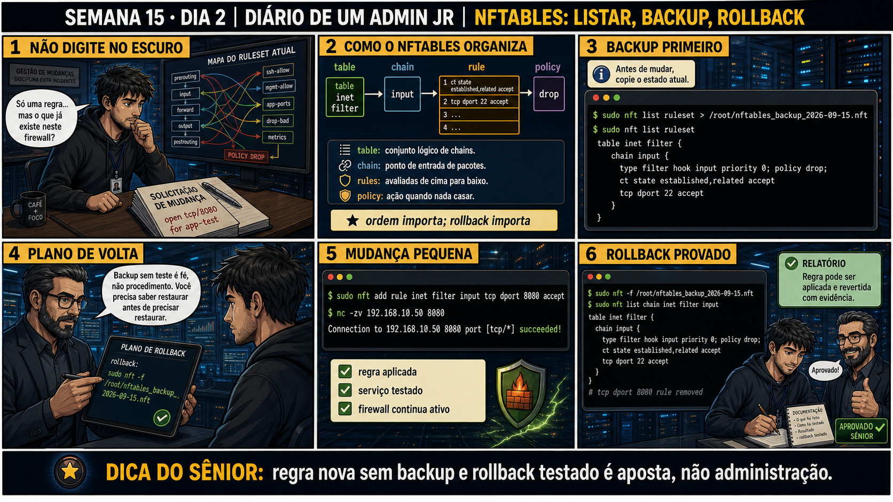

DIARIO DE UM ADMIN JR. | FASE 2 — REDES, DO IP AO DIAGNÓSTICO
🧠 Antes de começar — 20 segundos de memória (Dia 1)
1. Ontem você aplicou três regras numa ordem específica pra não se trancar fora. Sem olhar: qual das três precisa vir ANTES do drop final pra garantir que sua própria sessão SSH sobreviva? 2. Hoje, antes de mexer em qualquer regra nova, o que você precisa ter em mãos primeiro?
1. A regra de ct state established,related accept — sem ela, mesmo respostas de uma conexão sua já aberta seriam bloqueadas pelo drop. 2. Um backup do ruleset atual, salvo ANTES de qualquer mudança — hoje o tema é justamente isso: nunca alterar firewall sem antes ter um caminho de volta testado.
🔗 Conecta com ontem: Ontem você garantiu que uma regra nova não te tranca fora.
Hoje o foco muda pra disciplina de mudança: antes de qualquer regra nova em produção, existe backup e um
rollback JÁ TESTADO — não um plano teórico, um comando comprovado que realmente volta ao estado anterior.
🔓 Privilégio de hoje: nunca aplicar mudança de firewall sem plano de volta
provado. Você ganha o fluxo completo: nft list ruleset > backup, aplicar mudança pequena, testar, e só
documentar como aprovado depois que o rollback (nft -f backup) foi realmente executado com sucesso.
Semana 15 · Dia 2 | Nível Júnior — Redes
nftables: Listar, Backup, Rollback
regra nova sem backup e rollback testado é aposta, não administração
ANTES DE ALTERAR, OBSERVE. DEPOIS DE ALTERAR, VALIDE.

1. O chamado
#6330PRIORIDADE BAIXA11:15aberto por: time de desenvolvimento
host: srv-app-06 · serviço: app-test, porta 8080
"Solicitação de mudança: open tcp/8080 for app-test."
Só uma regra... mas o que já existe neste firewall? Você sabe o ruleset atual de cor?
💡 Passa o mouse nas palavras destacadas pra ver uma dica rápida — clica se quiser a explicação completa com analogia.
2. O sênior te conta
Semana passada, outro ticket
Um colega tinha um "plano de rollback" bonito, documentado num wiki, pra uma mudança de firewall que
nunca tinha rodado de verdade. Quando a mudança nova deu problema em produção, ele copiou o comando do
documento — e o caminho do arquivo de backup estava errado, um erro de digitação que ninguém tinha
percebido porque o plano nunca tinha sido executado. Perdemos 20 minutos até encontrar o backup real.
Desde então, a regra que ensino é simples: antes de qualquer mudança de firewall, salvar
nft list ruleset > backup.nft não é o suficiente — é preciso RODAR o rollback pelo menos
uma vez, em teste controlado, pra provar que ele funciona de verdade. Documento sem execução é teoria;
comando testado é procedimento. O mesmo vale pra qualquer backup, não só firewall — a Semana 6 já
ensinou isso com restore de banco de dados.
3. Decodificador de conceitos
Clica em qualquer termo pra ver a definição completa e uma analogia do dia a dia:
4. Ferramentas e leitura da evidência
Comando
O que faz
nft list ruleset > arquivo
Salva o estado completo atual do firewall num arquivo.
nft add rule ...
Adiciona uma regra nova à chain especificada.
nft -f arquivo
Carrega (restaura) o ruleset a partir de um arquivo — usado pra rollback.
5. Laboratório guiado — marca conforme for testando
Segurança: execute os testes apenas em VM descartável e confirme nomes de discos, hosts e arquivos antes de cada comando.
Ação: salve o ruleset atual num arquivo de backup com data no nome.
$ sudo nft list ruleset > /root/nftables_backup_$(date +%F).nft
Resultado esperado: arquivo criado com o conteúdo completo do ruleset atual.
Por quê: o backup precisa vir sempre antes da mudança — depois é tarde demais pra capturar o estado original.
Cilada comum: não confirmar que o arquivo foi realmente criado (cat no arquivo) antes de seguir em frente.
Se o seu resultado foi diferente
"Permission denied" ao gravar em /root/ → sem sudo completo na redireção, o shell tenta escrever em /root/ com seu próprio usuário. Use um caminho que você tenha permissão, como ~/nftables_backup_$(date +%F).nft, ou rode o comando inteiro com sudo sh -c '...'.
Ação: adicione uma regra pequena de teste e valide.
Carrega (flush and load) um arquivo de regras nftables inteiro, substituindo o ruleset atual pelo conteúdo do arquivo — é isso que faz o rollback funcionar: você recarrega o estado salvo antes da mudança.
nft list chain inet filter input
Lista as regras da chain input depois do rollback, pra confirmar visualmente que a regra de teste sumiu.
Resultado esperado: chain volta ao estado original, sem a regra de teste.
Por quê: esse é o passo que transforma "eu acho que tenho rollback" em "eu provei que tenho rollback".
Cilada comum: salvar o backup DEPOIS de já ter feito a mudança — nesse caso o "backup" já contém a regra nova, e o rollback não reverte nada.
🧑🏫 Aqui entra o Mentor (em breve): se o rollback não remover a regra esperada, este é o ponto onde o chat com o Sênior-IA vai ajudar a verificar se o backup foi salvo antes ou depois da mudança.
Ação: reaplique a mudança de teste e confirme de novo.
Resultado esperado: relatório de mudança completo e aprovado — reproduzindo o painel 6 da prancha de hoje.
Por quê: registrar que o rollback foi testado (não só planejado) é o que dá confiança pra próxima mudança maior.
Cilada comum: aprovar a mudança em produção baseado só no plano escrito, sem ter testado o rollback nem uma vez.
6. Antes de ver as opções — tenta responder
🧠 Recall ativo: quais são os quatro níveis de organização do nftables, do mais amplo pro mais
específico?
table
(conjunto lógico de chains) →
chain
(ponto de entrada de pacotes) →
rules
(avaliadas de cima pra baixo) →
policy
(ação quando nada casa). Ordem importa, rollback importa — essa é a base de qualquer mudança segura.
QUESTÃO 1 de 3
7. Questão comentada — clica numa alternativa
Você precisa adicionar uma regra pequena (abrir tcp/8080) num firewall de
produção. Qual é o PRIMEIRO comando a rodar, antes de qualquer coisa?
💡 Analogia do Sênior para Fixar: O princípio fundamental de 02 NFTABLES BASICO ROLLBACK é como o alicerce de sustentação de um viaduto: garante que a estrutura de comunicação suporte alto tráfego sem colapsar.
QUESTÃO 2 de 3 — cenário de erro real
7.1 Você tem um "plano de rollback" escrito num documento, mas nunca o executou de verdade
O painel 4 da prancha de hoje é direto: "Backup sem teste é fé, não procedimento."
Por que um plano de rollback nunca testado não é confiável, mesmo estando bem
documentado?
💡 Analogia do Sênior para Fixar: Diagnosticar anomalias em 02 NFTABLES BASICO ROLLBACK é como o eletricista usando o multímetro no quadro de disjuntores: mede a passagem de sinal no ponto exato da falha.
QUESTÃO 3 de 3 — detalhe que confunde todo iniciante
7.2 "nft list ruleset e nft list chain mostram a mesma coisa, só com nomes diferentes?"
Um colega usa os dois comandos indistintamente, achando que têm o mesmo escopo.
Qual é a diferença real de escopo entre eles?
💡 Analogia do Sênior para Fixar: Aplicar as boas práticas de 02 NFTABLES BASICO ROLLBACK é como o protocolo de segurança da aviação: elimina pontos únicos de falha e garante previsibilidade operacional.
8. Procedimento profissional
Antes de qualquer mudança, salve o ruleset completo com nft list ruleset > arquivo.
Aplique a mudança pequena e específica solicitada, nada além disso.
Teste o resultado (ex: nc -zv na porta liberada) pra confirmar que funcionou.
Teste o rollback de verdade — restaure o backup e confirme que a regra some.
Só documente como aprovado depois de provar que tanto a mudança quanto o rollback funcionam.
Prevenção
Padronize o teste de rollback como etapa obrigatória em toda mudança de firewall — nunca
aceite um "plano de rollback" que não foi executado nem uma vez, mesmo estando bem documentado.
9. Validação e encerramento
Um backup do ruleset completo foi feito antes de qualquer mudança.
A mudança aplicada foi pequena e específica, testada com sucesso.
O rollback foi executado de verdade, não apenas planejado no papel.
A documentação final só foi escrita depois de mudança e rollback comprovados.
Rollback e limites
nft -f restaurando um backup válido é a própria operação de rollback — segura e
reversível desde que o backup tenha sido salvo corretamente antes da mudança. O cuidado real é nunca
considerar um rollback "pronto" sem tê-lo executado pelo menos uma vez em ambiente controlado.
💡 Sobre repetição espaçada: "backup sem teste é fé, não procedimento" conecta
com a Semana 6 (restore de verdade, não só ter backup) — mesma disciplina de provar reversibilidade antes de
confiar nela. O Anki vai conectar os dois.
10. Resposta final
Alternativa correta: A. Nesta aula, o primeiro comando certo foi
nft list ruleset > backup, salvando o estado completo antes de qualquer mudança. O ponto central do
caso é este: regra nova sem backup e rollback testado é aposta, não administração.
🔓 O que você desbloqueou hoje
Capacidade de aplicar mudanças de firewall com disciplina de backup e rollback
comprovado. Amanhã você aprende a diferenciar dois tipos de problema que parecem iguais de fora: "o serviço
está parado" versus "o firewall está bloqueando" — e por que desligar o firewall pra descobrir é sempre o
caminho errado.